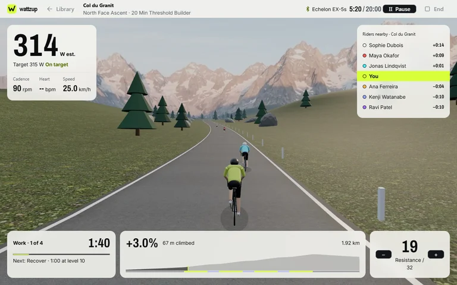
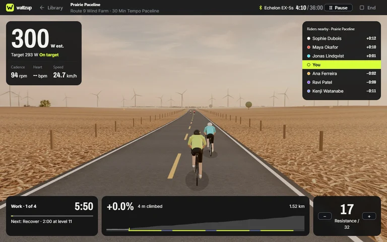
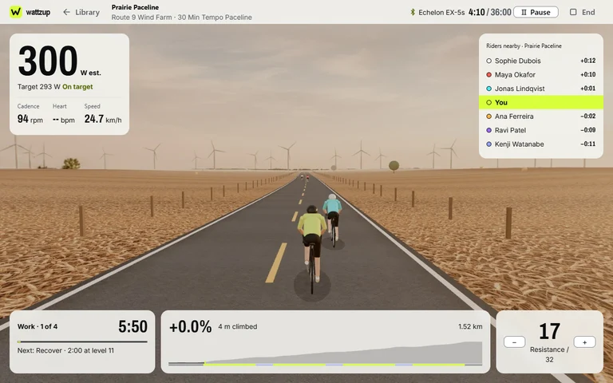
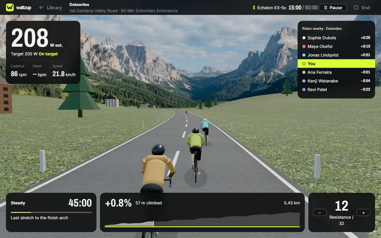
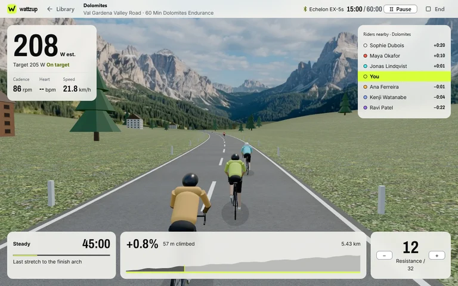
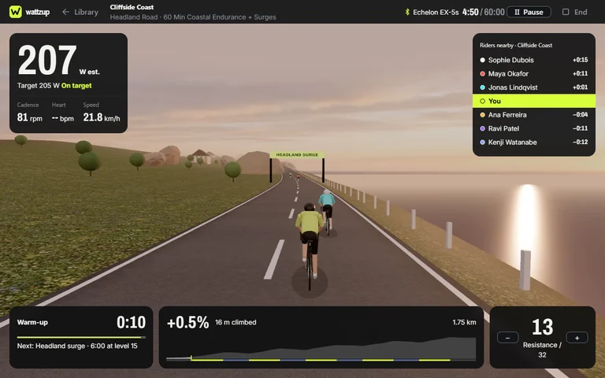
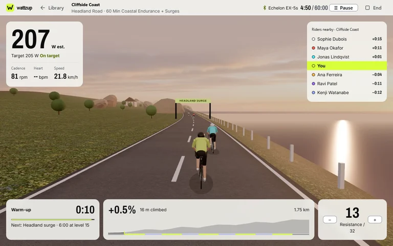

Neon Docklands
20 Minute Power IntervalsA harbour city after dark. Each one-minute effort is a bridge ramp over the docks.


Every class gets its own world. The road kicks up during efforts and eases during recoveries.
A harbour city after dark. Each one-minute effort is a bridge ramp over the docks.
A mountain pass at first light. The threshold blocks are the steep ramps.


Cobbled streets on race day. Each of the eight sprints is a kick up to the cathedral.


Open farmland at golden hour. Take long turns on the front, into the wind past the turbines.


A valley road under limestone peaks. Soft rollers, one steady level and long views.


A clifftop road at sunset with the sea on your right. Each tempo surge climbs a headland.

